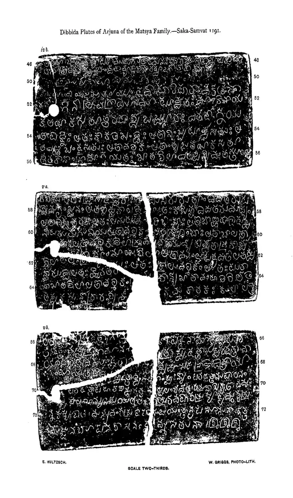

Three copper-plate inscriptions of Gövindachandra of Kananj
No. 15.— THREE COPPER-PLATE INSCRIPTIONS OF
GOVINDACHANDRA OF KANAUJ.
By F. KIELHORN, PH.D., LL.D., C.I.E.; GÖTTINGEN.
The originals of these inscriptions are now in the Lucknow Museum. My account them is based on impressions, kindly furnished to me by Dr. Führer,11 who also has inform me where and when the original plates were found.12 I have treated of them in the same manner as of the Kamauli plates of Gövindachandra, above, Vol. IV. p. 101 ff.
1 Read -nairritydîn.
2 The reading may possibly be bhâla.
3 The ordinary Sanskrit spelling would be maṇdapa.
4 Metre: Şilâka (Auushțubh).— Comparé Ind. Ant. Vol. XIV. p. 58, ll. 51-54.
5 With the exception of part of the sign for au, the letters in these brackets are broken away.
6 The aksharas in these brackets, which I have conjecturally supplied, are entirely broken away.
7 Here about three aksharas are broken away. 8 Metre of verses 23-26: Şilâka (Anushțubh).
9 The word in these brackets is entirely broken away.
10 Originally paraddatt- was engraved.
11 Of the inscription C. an impression was given to me some years ago by Dr. Burgess.
12 See also Dr. Führer's Monum. Antiquities and Inscriptions in the North-Western Provinces and (pp. 155 and 263.
Plate 1 is bound after this page.
A.—PĀLĪ PLATES OF GÓVINDACHANDRA AND HIS MOTHER
RĀLHANADĖVĪ, OF [VIKRAMA-]SAŭVAT 1189.
These plates were found at the village of Pālī in the Dhuriāpār pargana of the Bānsgāon tahsīl of the Gōrākhpur district of the North-Western Provinces, and were in January 1895 presented to the Lucknow Museum by the Collector, Dr. Hoey, who had obtained them through Pirthipal Rai, the Zamīndār. They are two in number, each of which measures about 1' 1½" broad by 10" high, and is inscribed on one side only. The plates have raised rims, and the writing, in consequence, is in an excellent state of preservation throughout. There is a ring-hole in the centre of the lower part of the first plate and a corresponding hole in the centre of the upper part of the second plate, but the ring on which the plates were strung is missing. With the plates, however, is preserved a circular seal, about 2½" in diameter, which bears in high relief, across the centre, the legend §[rī*]mad-G[ō]vindachandradēva, in Nāgarī letters about rī" high; above the legend, the figure of a Garuđa, squatting down and facing to the proper right; and below the legend, a conch-shell.—Each plate contains 17 lines of well executed writing. The size of the letters is about ¾". The characters are Nāgarī, and the language is Sanskrit. As regards orthography, the letter b is everywhere denoted by the sign for v; the dental sibilant is frequently employed instead of the palatal, and the palatal occasionally instead of the dental; and j is used instead of y in the word jūtti, l. 20.
The inscription is one of the Paramabhaṭāraka Mahārājādhirāja Paramēśvara Gōvindachandradēva. The king records in it that, after bathing in the Satī at the ghaṭta of the god Svapnēśvara, on the occasion of the Akshaya-tritīyā festival in the bright half of the month Vaisākha, he made over to his mother, the Mahārājānī Rālhanadēvi,1 ten nālukas (of land) in the village of Guduvī, in the Gōyara pattalā of the Ônavala pathaka, as a gift for the Thakkura Jayapālaśarman, son of the Thakkura Iudrāditya and son's son of the Thakkura Pēvalaha, a Brāhmaṇ of the Mudgala gōtra, whose three pravaras were Maudgalya, Ângirasa and Bhārmyaśva.—The taxes specially mentioned (in line 26) as due to the donee are the bhāgabhōgakara and pravaṇikara. In line 34 the inscription is dated, in figures only, on Saturday, the 8th of the dark half of Jyaishṭha of the year 1189. The grant was written by the Thakkura Vishṇu.
The date in line 34 regularly corresponds, for the Kārtilkādi Vikrama-Samvat 1189 expired and the pūrnimānta Jyaishṭha, to Saturday, the 29th April A.D. 1133, when the 8th tithi of the dark half ended 15 h. 48 m. after mean sunrise. The preceding Akshaya-tritīyā, on which the donation was made, fell on Sunday, the 9th April A.D. 1133, when the third tithi of the bright half of Vaisākha commenced 1 h. 17 m. and ended 23 h. 5 m. after mean sunrise.2
The localities I am unable to identify.—From the present inscription it appears that the pattalā, so often mentioned in cognate grants, was a subdivision of the pathaka,3 a term which does not occur in the inscriptions of the kings of Kanauj hitherto published, but which is met with also in another Pālī plate of Gōvindachandra that will be referred to below.4 Another unusual term in this grant is nāluka, in line 19. This word apparently is derived from, and is equivalent to, the Sanskrit nalva, a measure of distance equal to 400 (or, according to others. 100, or 120) hastas. The same term occurs, both in the form nāluka and in the abbreviated form nālu, in the Kahla (now Lucknow Museum) plates of the (Kalachuri?) Mahārājā dhirāja Sōđhadēva, the successor of the Mahārājādhirāja Maryādāsāgaradēva, of V. 1135, of which Dr. Führer has kindly sent me an impression.
1 In other inscriptions the name is both Rālhayadēvt and Rāldadēvt; see above, Vol. IV. p. 113.
2 The tithi, on which the donation was made, therefore was a kshaya-tithi.
3 See Gupta Incr. p. 173, note 1.
4 See below, p. 114, note 4.
EXTRACTS FROM THE TEXT.1
First Plate.
15 . . . . . 2-śrímad-Góvindachaindradēvō vijayí ||8
4[Óṇavala-pathakē Góyara-patta[lá*][y]âm
16 Guduvi-gráma-nivási(si)nô=khila-janapadân=upagatân=ap=ítara-ŵrája-rájúí-6 y u var â ja-mantri-purô.
17 hita-bhâmðâgûrik-âkshi(ksha)paṭalika-bhisha g-nai m itti k-ânta h̐ p ur i k a-d ú ta-karituragapattanâkaragôku.
Second Plate.
18 lâdhikâri-purushân=ájúâpayati vô(bô)va(dha)yaty=ádiſati cha || Viditam=asti bhavatâm yath=ôpariligvi(khi)-
19 ta-grâmê7 8nâluka-das(ſ)=ânkê=pi nâluka 10 sajala-sasthala-salavaṇâkare samatsyâkara-sa-
20 garttôshaṇa-sâmramadhûkavanaviṭapavâtikâtrinajú(yú) tigôchara- s ô r d d h [ v * ] â d h a svasimâparyanta-chaturâghâtavisu(ſu)ddhâh9 Mandgala.
21 gôtrâya Mandgala-Ángirasa-Bhârmyasa-triihpravarâya10 ṭhakkura-śrí-Pêvalah pautrâya ṭhakkura-śrí-Iindrâditya-putrâya11 ṭhakku-
22 ra-śrí-Jayapâlasa(ſa)rmmapê vrâ(brâ)hmanâya Vaisâ(ſâ)khê mâsi śi(si) pakshê12 akshaya-tritiyâyâm parvvaṇi dêva-śrí-Svapnêsva(ſva)ra-gh
23 tê(tṛê) Satyâm vidhivat=snâtvâ dêva-manuja-bhûta-pitri-gapâms=tarppayit s[ú*]rya-pûjâ-pûrvvakam Bhavânti-patim samabhyarchya prachura-pâ-
24 yasêna havishâ havirbhujam hutvâ tribhuvana-trâtur=bhagavatô Vâsudêvas cha pûjâm vidhâya mâtâpitrôr=âtmanas=cha punya-
25 yasô(áô)-bhivṛiddhayê gôkarṇna-kuśalatâ-pûta-karutal-ôkam13 mâtri-mahârájúî-ſ Râlhaṇadêvri14 âsâm hastê pradattô15 ma-
26 tvâ yathâdiyamâna-bhâgabhôgakara-pravaṇikara-prabhṛiti-samasta-mi(ni)ya t- â d â y vidhêyîbhúya dâsyath=êti [||*]
27 Bhavanti ch=âtra ślôkâh |16 . . . . .
1 From an impression supplied by Dr. Führer.
2 Up to this, the text is practically identical with the text of the Kamauli plate of Góvindachandra, publicly above, Vol. IV. p. 100 f. The nine verses at the commencement of the inscription are numbered here numerical figures.
3 This sign of punctuation is superfluous; read vijayy.
4 The akshara in brackets looks as if i had been first engraved, and then altered to ô. Ónavala, corr out of óṇavala, occurs as part of the name of a paṭhaka in a Pâll copper-plate inscription of Góvindachund V. 1171, the first plate of which has been presented by Dr. Hoey to the Lucknow Museum. In line 13 of plate, of which also I owe an impression to Dr. Führer, we read: Saruvdrđónavala-pathakê | Sirast-pattalây Pâltgráma-prabhṛiti-grâmêshu.
5 Instead of ap=ítara- nearly all the other plutes of the same dynasty have api cha.
6 Originally rájútra- was engraved, but the akshara ra is struck out.
7 Originally -gráma-prabhṛitishu was engraved, with a sign of amusvđra above the line, between ti and bnt the word prabhṛitishu is struck out again, and the sign of the vowel ê above the ma of grđma is faintly on the back of the impression.
8 One would have expected here daša ndlukâ ankê=pi nâlukâ 10 sa-jala-sthaldh sa-lavan-âkarâh, etc.
9 Read ôdđhâ.
10 Originally -Bhârmyâsa- was engraved; read Mudyala-gôtrdya Mauđgaly-Ángirasa-Bhârm tripravardya.
11 Read -ir-Iindrâ.
12 Read pakshê=kshaya.
13 Read -karatal-bđaka-pûrvaṇ.
14 Read ôdêoy=dsâm (for simply ôdêvyjâ).
15 One would have expected pradattâ; see above, note 8.
16 Here follow the seven verses commencing Bhâmîm yah̐ pratigrihṇpti, Śaṅkhaṇm bhadr-dsanaṇm, Bah rasudhî, Sva-dattîm para-dattâm vâ, Shashṭim varsha-sahasrîṇi, c âm=êkâm, and Surrân=êtân=bhâcina
34 . . . . Maingalam mahâ-śrīh || Samvat 1189
J[y*]jēshṭha-vadi 8 Sa(śa)nau | Likhitam ch=ēdam thakkura-Vi[shpu]n¹=
ēti [||*]
B.—MACHHLĪSHAHR PLATE OF GÖVINDACHANDRA
OF [VIKRAMA-]SAMĖAT 1201.
OF [VIKRAMA-]SAMĖAT 1201.
This is a single plate which was found, in September 1888, in a field close to a small hamlet seven miles north of Máchhlishahr (Ghiswâ) in the Jaunpur district of the North-Western Provinces, and is now in the Lucknow Museum. It measures about 1' 3 ¾" broad by 11 ½" high, and is engraved on one side only. In the centre of the upper part it has a ring-hole, through which passes a ring, with a circular seal which is about 2 ½" in diameter and bears the same legend and emblems as the seal of the inscription A., but apparently not so well preserved. The plate contains 29 lines of writing which, on the whole, is well preserved. The size of the letters is between ¼" and ½". The characters are Nágarí, and the language is Sanskrit. The writer has done his work well, and in respect of orthography, therefore, it need only be stated that, except in the word babhramur= in line 9, the letter b is denoted by the sign for v, and that the dental sibilant is occasionally employed instead of the palatal.
This is another inscription of the Paramabhatfáraka Mahárújádhirája Paraméṣvara Gövindachandradēva, who records that, on Monday, the Akshaya-tritiyâ tithi of the bright half of the month Vaiśâkha of the year 1201 (given both in words and in figures), after bathing in the Ganges at Benares, he granted the village of Pêrôha in the Mahasôya pattalâ to the Paṇdita Vamśadharaśarman, son of the Paṇdita Padmanâbha and son's son of the Paṇdita Bharata, a Brâhmaṇ of the Kâśyapa gôtra, whose three pravaras were Kâśyapa, Âvatsâra and Naidhruva.—The taxes specified (in line 20) are the bhágabhôgakara, pravaṇikara and turushkadaṇḍa. The grant (támra) was written by the Kâyastha Dhandhúka.2
About the exact equivalent of the date I am somewhat doubtful. It is true that, for the Chaitrâdi Vikrama-Samvat 1201 current, the date would regularly correspond to Monday, the 19th April A.D. 1143, when the third tithi of the bright half of Vaiśâkha ended 21 h. 52 m. after mean sunrise. But as current years are only quoted very exceptionally, and as for the Kârtitikâdi Vikrama-Samvat 1202 expired the date would correspond to Monday, the 15th April A.D. 1146, which was entirely occupied by the third tithi of the bright half of Vaiśâkha, I am rather inclined to assume that this is really the day on which the grant was made, and that in the inscription the year 1201 has been quoted erroneously instead of 1202.3
Regarding the localities I can only say that the Mahasôya pattalâ of this inscription undoubtedly is the same district which in an inscription of Jayachchandra4 is called the Mahasô pattalâ.
EXTRACTS FROM THE TEXT.5
12 . . . . 6-śrimad-Gövindachandradēvô vijayî ||7 Mahasôya pattalâyâm | Pêrôha-grâma-nivâsinô ni[kh]ila-janapadân=upagatân-api cha râja-râjñi-yuvarâja-mam-
1 I am somewhat doubtful about the akshara in brackets; above it the sign for the medinl é was engraved, but has been struck out again. The Thakkura Vishpu wrote the grant of Gövindachandra published above, Vol. IV. p. 113 f.
2 This very probably is the same writer who in another inscription of Gövindachandra is described as the 'Thakkura Dhâdhúka;' see above, Vol. IV. p. 114, inscription L.
3 There are numerous other dates, of both the Vikrama and the Śaka era, in which we find the same error.
4 See above, Vol. IV. p. 122, line 18 of the text. 5 From an impression supplied by Dr. Führer.
6 Up to this, the text is practically identical with the text of the Kamauli plate of Gövindachandra, published above, Vol. IV. p. 100 f.
7 This and the other signs of punctuation in lines 12-19 are sterneous.
13 tri-purôhita-pratíhâra-sênâpati-bhâṇḍâgrik-âkshapaṭalika-bhishag-naimittik-ântahpurika-dûta-karituragapattanâkarasthânagôkulâdhikâri-purushân=âjñâ.
14 payati vô(bô)dhayaty=âdisati cha yathâ | viditam=asa(stu) bhavatâm | yath=ôparilikhita-grâmah sa-jala-sthalah sa-lôha-lavaṇ-âkarah sa-matsy-âkarah sa-ga[r*]tt-â(ô)-.
15 sharah sa-madhûk-âmra-vana-vâtikâ-vitapa-trina-yûti-gôchara-paryantah sa-ôrddhv-âdhas-chatur-âghâta-visuddhah sa-sîmâ-paryantah samvatsarâṇâ[mêka]'dhika-dvâdaśa-śatêshu.
16 Vaisâkhâ mâsi śukta(kla)-pakshê śkshaya-tritiyâyâm tithau Sôma-dinê śikê-pi samvatâ 2012 Vaisâkha-sudi 3 Sômê śdy-êha śrîmad-Vâra[ṇa]syam Ga[ṇg]âyâm snâtvâ vidhivan=mant[r]a-.
17 dêva-muni-manuja-bhûta-pitrî-gaṇâms=tarppayitvâ tîmira-paṭala-pâtana-paṭu-mahasam=Ushṇarôchisham=upasthây=Âushavi(dhi)pati-śakala-sêkharam samabhyarchchya tribhuvana-trâtur=bhaga-.
18 vatô Vâsudêvasya pûjâm vi[dhâ]Jya prachura-pâyasêna havishâ havirbhujam hutvâ mâtâpitrôr=âtmanas=cha punya-yasô-bhivrîddhayê śsmâbhir=ggôkarnna(rnṇa)-kuśalatâ-pûta-ka-.
19 ratal-ôdaka-pûrvvam Kâsya(śya)pa-gôtrâya | Kâsya(śya)p-Âvatsâra-Naidh[r]uva-tripravarâya | pamñdiva(ta)-śrî-Bharata-pautrâya | paṇdita-śrî-Padmanâbha-putrâya | paṇdita-śrî-Vamâsdhara-.
20 śarmmaṇ[é*] vrâ(brâ)hmaṇâya ehandr-ârkkam yâvach=chhâsanîkritya pradattô matvâ yathâdiyamâna-bhâgabhôgakara-pravaṇikara-turushkadaṇḍa-prabhriti-sarvv-âdâyân=âjñâ-vidhêyîbhûya dâsya-.
21 th=êti || chha || Bhavanti ch=âtra ślôkâh ||4. . . . .
28 . . . . . || chha || 6Eta[t=tu] tâmra[m=akhi]la-kshitipâla-mauli-.
29 śrêṇî-nighrishta-charaṇasya tad=asya râjñah | kâyastha-ratnam=alikhad=vivu(bu)dh-aika-va(ba)ndhur=Ddhandhûka ity=amarasindhu-visuddha-kîrttih || chha ||
C.—BANGÂVAN PLATE OF GÔVINDACHANDRA AND HIS QUEEN GÔSALADÊVÎ, OF [VIKRAMA-]SAMĖVAT 1208.
This also is a single plate which was found, in December 1887, in a field near the village of Bangâvan in the Daryâbâd pargaṇa of the Râmsanehî-Ghâṭ tahsîl of the Bâra Bankî district of Oudh, and which is now in the Lucknow Museum. It measures about 1' 51/2' broad by 1' high, and is inscribed on one side only. At the lower proper left corner a square piece, about 11/5' broad by 23/4' high, is broken away, causing the loss of about four aksharas at the end of each of the lines 19-25; otherwise the plate is well preserved. In the centre of the upper part it has a ring-hole, through which passes a ring, with a circular seal which is about 21/2' in diameter and bears the same legend and emblems as the seal of the inscription A.4 The
1 The reading of the letters in these brackets is doubtful, because some correction has been made here in the plate; originally there was not room for more than one akshara between oṇâm and dhika. Read oṇam=êkdâhika-.
2 Read samĖvat 1201; the figure for the unit (1) is quite clear and distinct, and cannot be read differently.
3 Read - Vârâṇasyâm.
4 Here follow the twelve verses commencing ḥbûmiṇ yrh pratigrîḥṇti, Śankham bhadr-desaṇin, Suroṇ=êtân=bhâvinah, Bahubhir=vasudhd, Gâm=êkâh, Tadâgdânân sahasrêṇa. Saa-dattâm para-dattâm vâ, Shashṭîṇ varsha-sahasrâṇi, Vdri-hnêthv=aranyêshv. Na vishaân visham, Yân=sha dattâni, and Vdt êbhra-vibhramam.
5 Metre: Vasantatilakâ.
6 So far as I can judge from the impression sent to me, the legend on the seal actually is jrîmad-Gôvindachadrâdêva, in Nâgarî letters between 9/10' and 7/2' high; and the Garuṣa above it seems to be very much like the figure of Garuṣa on the Mândhâtâ plates of Javasîmha, above, Vol. III. p. 50, Plate.
plate contains 25 lines of writing. The size of the letters is about . The characters are Nágarī, and the language is Sanskrit. The writer and engraver have done their work in a rather slovenly manner so that the text contains a large number of minor mistakes. As regards orthography, the letter b is denoted by the sign for v, the dental sibilant is often employed instead of the palatal, j is used instead of y in -parjantah, l. 16, and the word sēkhara is written sēshara, in line 19.
This is another inscription of the Paramabhattāraka Mahārájádhirája Paramēsvara Gōvindachandradēva.1 The king records in it that, on Tuesday, the full-moon tithi of Kārttika of the year 1208 (given both in words and in figures), his queen, the Patṭamahádévi Mahārájñī Gósaladévi, endowed with all royal prerogatives, after bathing in the Ganges at Benares near (the temple of) the god Lólārka,2 in the presence of that deity, with the king's consent, gave the village of Gaṭiara in the Bhímamayūtāsa . . 3 pattalá to the Thalkura Apataśarman, son of the Thalkura . . . 4 and son's son of the Thalkura Kulhē, a Bráhmaṇ of the Vasishṭha gótra and student of the Chhandóga sákhá (of the Sáma-věda), who had come from Pāṭaliputra.—The taxes specified (in line 22) are the bhágabhógakara and pravapikara. The writer's name either was not given or is broken away at the end of the inscription.
The date is irregular;5 for the full-moon tithi of Kārttika of Vikrama-Samvat 1208 current ended 17 h. 43 m. after mean sunrise of Monday, the 6th November A.D. 1150, and that of Vikrama-Samvat 1208 expired, 3 h. 58 m. after mean sunrise of Saturday, the 27th October A.D. 1151. The date would be incorrect also for Vikrama-Samvat 1209 expired. but correct for both 1206 and 1210 expired.
Of the localities, Pāṭaliputra is the modern Patna in the Patna district of Bengal; the village Gaṭiara and the pattalá in which it was situated I am unable to identify.
EXTRACTS FROM THE TEXT.6
12 . . . . . 7-śrīmad-Gōvindachandradēyō(vō) v[i]jayī
13 Bhímamayūtāsa . . 8-pattalāyām Gaṭiara-grāma-nivāsiaō niyi(khi)la-janapadān=
u[pa*]gatān=api cha rāja-rājūl-maintri-puróhita-pratīhāra-s[é]nāpati-
14 [bh]jāmdāgārik-ākshapaṭalika-bhishag-ni(nai)mittik-āntaḥpurika-sū(dū)ta-karituraya(ga)-
pattanákarasthānagōkulādhikāri-purushān=ājñāpayati(ty)=ādiśati
15 vō(bō)dhayati cha | yathā9 viditam=astu bhavatām yath=ōparīlikhita-grāmaḥ
sa-jala-sthalaḥ sa-lósla(ha)-lavaṇ-ākaraḥ sa-gartt-ōsharaḥ sa-na(ma)dhūkaḥ(ka)-
chūta-da(va)na-vitapa-[vā]ti-
16 kā-triṇa-yūti-gōchara-parja(rya)ntaḥ s-ōrddh[v*]-ā[dha]ś=chatur-āghāta-visu(śu)ddhaḥ
sva-sā(sī)mā-paryantaḥ |10 samvatsarānām11 ash[t*]jāvi(dhi)ka-dvādatya(śa)-
sa(śa)tēshu Kārttikē māsi [su(śu)]kla-
1 Compare the inscription of Gōvindachandra and his queen Nayapakélidévi of V. 1176, above, Vol. IV. p. 107, F.
2 Lólārka is a form of the Sun.
3 The two last aksharas of this name are illegible in the original.
4 The part of the plate which contained the name is broken away.
5 Compare Ind. Ant. Vol. XIX, p. 367, No. 184 (where on p. 368, line 2, '16 October' is a misprint for '15 October').
6 From an impression supplied by Dr. Führer.
7 The inscription begins with the words ōnh ōni siddhih (instead of ōni svasti); otherwise the text, up to this, is practically identical with that of the Kamsuli plate of Gōvindachandra, published above, Vol. IV. p. 100 f.
8 Here two (apparently damaged) aksharas are illegible in the impression.
9 This word is superfluous.
10 This and the other signs of punctuation in lines 16-22 are superfluous.
11 Read 'ráṇām=.
17 pakvê(kshê) paurṇnamásyâm tithau Bh[au]ma-dinê çkvê(ñkê)=pi sainvat
1208 Kârttika-sudi 15 Bh[au]mê || 1tad-êtat-sainmatyâ
samastarâjaprakriyôpêta-sarvvâlarinkâ-
18 ravibhûshita-va(pa)[tṭa]mahâdêvî-mahârâjñî-śrî-Gôsaladêvibhih śrîmad-Vârâṇasyâm
Kârtti[ki]-parvvaṇi dêva-śrî-Lôlârkka-sannidhô(dhau) Gaṅgâyâm snâtvâ [timi].
19 ra-paṭala-pâ[ṭa]nam2=Ushnarôvi(chi)sham=upasthâ y=A ushadhipati-sa (śa) kala-
[śê]sha(kha)ram samabhyarchchya trilu(bhu)vana-trâtur=Vâsudêvasva(sya
pûjâm vidhâya havishâ havirbhujam [hutyâ mâtâ]-3
20 pitrôr=âtmanas=cha puṇya-yasô(śô)-vi(bhi)vṛiddhayê svargga-dvâra-kapâṭ-ârggal
ôdghâṭanâya4 âyuh-śrêyah-kâm-ârthê va(cha) | dêva-śrî-Lôlârkk-âgr
gôkar[ṇṇ]a-ku[śalatâ]-
21 pûta-karatal-ôdaka-pûrvvam=asmâbhih5 Pâṭali(lñ)putra-vinirggatâya [Chchha]ndôge
sâ(sâ)kh-âdhyâyinê Vasishtha-gôtrâya ṭhakkura-śrî-Kulhê-pautrâyâ(ya |) 6ṭha-śr'
. . . . . 7
22 putrâyâ(ya |) 6ṭha-grî(śry)-Aṇatasa(śa)rmaṇê vrâ(brâ)hmaṇasa(ya) śâsanîkrity
pradattô matvâ yathâdñyamâna-bhâgabhôgakara-sra(pra)vanika[ra*]-prabhṛit
sa[ma*]st-âdâyân=[âjñâ-śrava]-
23 ṇa-vidhêvi(yî)bhûyabhûya8 dâsyap(th)=êti || chchha || Bhavanti ch=âtra dharr
ânusam(sâ)sinaḥ ś[l]ôkâḥ |9 . . . . .
1 One would have expected here asmat-sainmatyâ; see above, Vol. IV. p. 109, l. 19 of the text.
2 Read -pâṭana-paṭu-mahasam-.
3 The aksharas in brackets at the end of lines 19-22 are broken away.
4 Read aṭandy-.
5 This asmâbhih is superfluous.
6 I.e. ṭhakkura-.
7 Here three or four aksharas are broken away.
8 Read -vidhêytîbhûya dâ-.
9 Here follow the four verses commencing Bhûmiñ gaḥ pratigrihñdti, Śankhañ bhadṛ-âsanañ, êkhñ, and Shashtîn varsha-sahasrdñi.
